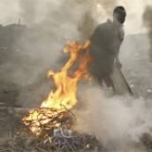
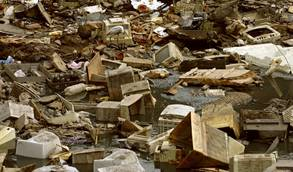
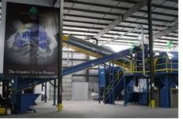

| METALS IN MEDICINE AND THE ENVIRONMENT | |||
| Metals | Electronic Waste | ||
|
Introduction The 21st century has been marked by a huge expansion in technology. However, with new advances the old becomes obsolete in merely a couple of years. This has lead to a growing problem of what to do with the accumulating electronic waste, which includes computers, telephones, televisions, and all other electronic equipment that makes our daily lives easier. According to the EPA (Environmental Protection Agency) for 2007, an estimated 2.25 million tons of e-waste was ready for disposal. Only 18% was recycled. The remaining 1.84 million tons primarily now rests in landfills (1). The story only gets worse. Of this 18% that actually gets recycled the GAO (Government Accountability Office) claims that much of it is being sent to developing countries that do not have the proper equipment to safely handle such waste. Thus, people and the environment are being exposed unnecessarily to harmful chemicals including heavy metals such as lead, mercury, and cadmium (2). As shown by Figures 1 and 2 below, e-waste sent to developing nations is being recycled with primitive techniques such as burning wires to get the metal inside, using open acid-baths to retrieve gold, and dismantling electronics without protective equipment. Once the metals have been taken out, the remains are left in huge piles or more often burned, releasing not only heavy metals such as lead into the environment, but also dioxins and flame retardants (3).   Figure 2. E-waste accumulation along canal in Africa.(4) As an example of the harmful impacts of e-waste on human health, a study was conducted on the blood lead levels in children less than 8 years of age in Guiyu and a nearby town Chendian. For nearly twenty years, Guiyu has been a center for e-waste disposal, and 60-80% of the inhabitants participate in primitive e-waste recycling and 70.8% of the children tested in Guiyu and 38.7% in Chendian had blood lead levels greater than 10 μg/dL. Lead is a neurotoxin, and even children with blood levels less than 10 μg/dL have been shown to have statistically lower IQ scores (5). Statistically children in Guiyu were shorter than those in Chendian indicating that the e-waste pollutants were also influencing development (5). Studies have shown that in China, because of e-waste activities, rice contains more heavy metals including cadmium, cooper, mercury, and lead. Average lead levels were as high as 0.69 μg/g in polished rice. This is 3.5 times higher than 0.20 μg/g, which is the Maximum Allowable Concentration for lead in rice (6). Unsafe handling of e-waste in China is diminishing as the Chinese government has banned imports of e-waste, but this only redirects the waste to other developing areas with fewer restrictions such as India and Africa. For example, in Figure 3, a man in India transfers lead into a pot, which is also used for cooking.
US Response Currently, the US does very little compared to other industrialized nations and only regulates the export of CRTs (cathode ray tubes), which are found in computer monitors and are particularly harmful because each CRT can hold as much as 4 lbs of lead. This rule forces companies to contact the EPA before CRTs are exported. The EPA confirms that the importing country is willing to accept the waste. However, the GAO claims that this rule is not being enforced. For example, when the GAO posed as fake buyers of CRTs, 43 US companies were willing to sell CRTs illegally. Many of these companies even advertised about their environmental friendliness. One such company charges consumers to recycle CRTs and declares its “mission is to be globally responsible” (2). The EPA has reprimanded one company for only $32,500 since the CRT rule began in January 2008 while the European Union can charge as much as 1.2 million euros (8). What the US Should be Doing Not only does the EPA need to enforce the CRT rule, but the EPA should also classify other electronics as hazardous. Most industrialized countries have signed the Basel Convention, which requires companies to get permission from the importing country’s government for the export of a broader range of electronic waste. In addition, the Basel Convention requires the exporter to make sure that the electronic waste is being safely recycled (2). Out of 170 countries who attended the conference, only three countries, the United States, Haiti, and Afghanistan, have signed, but refused to ratify the Basel Convention (4). Thus, for the most part the United States seems not to care as long as the materials are no longer an American problem, but this could change if the United States were to ratify the Basel Convention. Ratifying the Basel Convention and enforcing the current CRT rule are good first steps, but the United States has many more options to become responsible for its trash. Many countries are forcing electronic companies to be responsible for the waste after the product is no longer functional encouraging companies to invest in electronics that last longer and contain less hazardous chemicals (9). There are a number of recycling companies such as Creative Recycling located in the United States which use powerful machines to separate metals safely with no harm to the environment or human health (4). However, despite these machines being cost effective, shipping e-waste out of the US is still “cheaper.” US restrictions on exporting e-waste will not cause the substances to pile up at home, but will instead allow suitable domestic centers to grow larger, which will prevent the needless destruction of the environment and human health in developing nations.  What You Can Do
National Geographic High Tech Trash "Don't recycle 'e-waste' with haste, activists warn" USA Today. References (1) “Statistics on the Management of Used and End-of-Life Electronics.” 2008. Environmental Protection Agency. 30 September 2008 (2) Stephenson, John et al. Electronic Waste: EPA Needs to Better Control Harmful US Exports through Stronger Enforcement and More Comprehensive Legislation. United States Government Accountability Office. August 2008. (3) Wong M.H et al. Export of toxic chemicals- A review of the case of uncontrolled electronic-waste recycling. Environmental Pollution. 149, 131-140 (2007). (4) Carrol, Chris. “High-Tech Trash: Will your discarded TV end up in a ditch in Ghana?” National Geographic January 2008. (5) Zheng, Liangkai, et al. Blood lead and cadmium levels and relevant factors among children from an e-waste recycling town in China. Environmental Research. 108, 15-20 (2008). (6) Fu, Jianjie, et al. High levels of heavy metals in rice (Oryza sativa L.) from a typical E-waste recycling area in southeast China and its potential risk to human health. Chemosphere. 71, 1269-1275 (2008). (7) Puckett, Jim, et al. Exporting Harm. The Basel Action Network and Silicon Valley Toxics Coalition. February 2002. (8) Biello, David. “Trashed Tech. Dumped Overseas: Does the US care?” Scientific American. 19 September 2008. (9) Nnorom I.C. and Osibanjo O. Overview of electronic waste (e-waste) management practices and legislations, and their poor applications in the developing countries. Resources, Conservation and Recycling. 52, 843-858 (2008). (10) “Creative Introduces Revolutionary Electronics Recycling System.” 2008. Creative Recycling. 30 September 2008. Author: Rebecca Schwantes
|
|||
| Topics | |||
|
|||